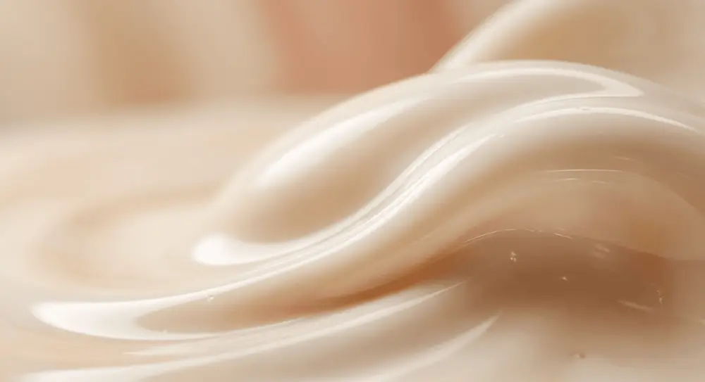
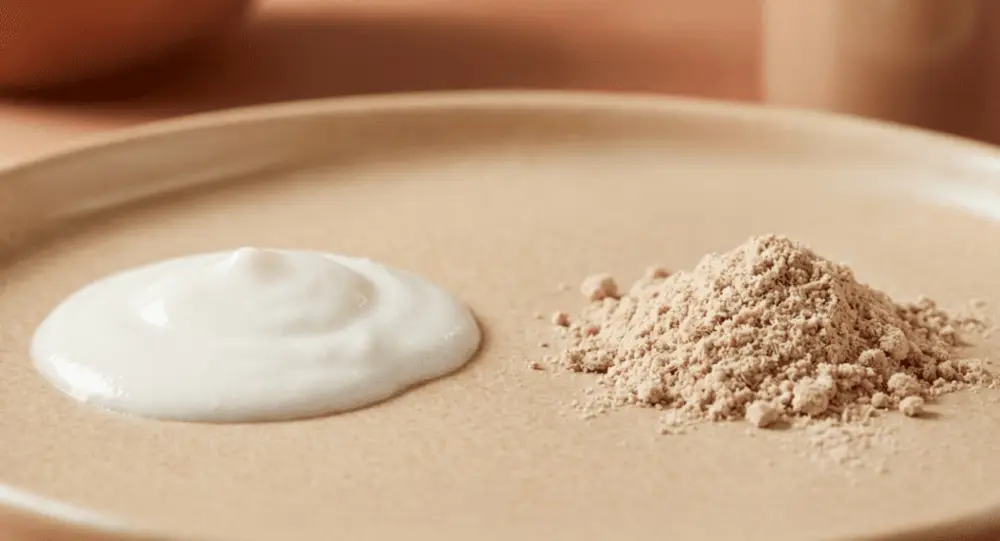
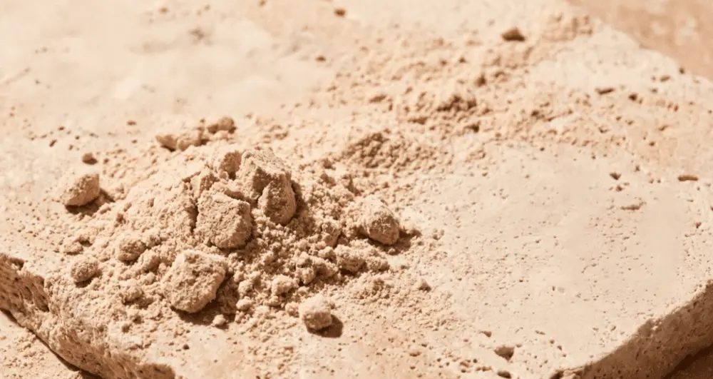

Articles / Tips & trends
Flavor Masking Techniques: Removing the "Chalky" Taste from Whey Protein
2026-01-13 · Technical Guide, Technical Guide

Original public content from Yen Chuan. Product claims and specifications remain subject to confirmation by the company.
The chalky mouthfeel in protein powder stems from three interconnected factors. At the manufacturing level, protein particles from spray-drying create a hydrophobic barrier without proper instantization treatment, causing powder to float on liquid surfaces rather than dissolve. At the user level, incorrect liquid-to-powder ratios (recommended minimum 8oz/240ml per scoop), insufficient mixing time (under 30 seconds), or adding powder before liquid directly causes clumping. At the ingredient level, low-cost powders often contain fillers and artificial sweeteners that dissolve even worse than protein itself, while plant proteins (pea, soy) contain 2-3x more fiber and starch than whey, creating naturally grittier textures.
Consumer testing reveals high-speed blenders improve smoothness 70% over shaker bottles when mixing for 30-60 seconds. Adding 1 tablespoon of nut butter or half an avocado reduces chalkiness 60% through emulsification. Frozen bananas or berries provide natural sweetness while their pectin content coats protein particles, creating milkshake-like creaminess.
Mixing Techniques: 5 Battle-Tested Methods to Eliminate Chalkiness
Method 1: Correct Addition Order
Always add liquid first, then protein powder. This simple change reduces clumping probability 80%. Specific operation: Pour 8-12oz (240-350ml) liquid into container → Add 1 scoop protein powder → Immediately shake or blend. For shaker bottles, add half the liquid first, powder on top, shake until smooth, then add remaining liquid for further improved dissolution.
Method 2: Choose the Right Mixing Tool
Tool selection directly impacts final texture. High-speed blenders represent the gold standard, completely dispersing protein particles and uniformly mixing with liquid. Shaker bottles with wire whisk balls (like BlenderBottle) are portable alternatives – the wire ball physically breaks up clumps through impact, performing 60% better than regular shakers. Spoon stirring alone almost never achieves smooth texture unless the protein powder underwent extensive instantization processing.
Method 3: Liquid Temperature and Type Selection
Cold liquids (39-50°F/4-10°C) work best. Excessive heat causes protein denaturation and coagulation, forming harder-to-dissolve clumps. For liquid types, whole milk or oat milk’s fat content coats protein particles creating smooth mouthfeel; water is most economical but thinnest texture; almond milk, coconut milk and other plant milks fall between. Adding 2-3 ice cubes not only cools but collisions during blending further break up clumps.
Method 4: Add Natural Thickeners and Emulsifiers
Frozen banana (half) is the best natural thickener – its pectin and starch adsorb protein particles while creating creamy texture. 1 tablespoon peanut butter, almond butter, or cashew butter provides healthy fats that emulsify powder into liquid through molecular action. Half an avocado, though neutral-flavored, contains monounsaturated fats serving as natural emulsifiers, reducing chalkiness 60% while adding nutritional density. A small amount of chia seeds (1 teaspoon) or flaxseed meal absorbs water forming gel that helps suspend protein particles.
Method 5: Mixing Time and Resting Techniques
When using shakers, shake continuously for 30-60 seconds with enough force to hear the wire ball striking. With blenders, start low speed 15 seconds to wet powder, then high speed 30 seconds until completely smooth. Critical technique: Let mixture rest 1-2 minutes after mixing for full powder hydration – protein molecules need time absorbing water and expanding, drinking too early makes chalkiness feel worse. If mixture sits over 10 minutes, powder settles requiring reshaking.


Selecting the Right Protein: Procurement Guide to Eliminate Chalkiness at Source
The Importance of Instantization Technology
Protein powders labeled “Instantized” undergo special treatment improving solubility 3-5x over untreated products. Instantization involves two key steps: agglomeration binds fine protein particles into porous structures, increasing particle size and porosity so liquid penetrates easier; lecithin coating (lecithination) forms a hydrophilic layer on particle surfaces, overcoming protein’s naturally hydrophobic properties.
Manufacturers typically add 0.5-1.5% lecithin (soy or sunflower lecithin) as surfactant. Sunflower lecithin is allergen-free and non-GMO but costs more; soy lecithin is economical but may retain trace soy protein requiring caution for soy-allergic individuals. Quality instantized protein powder should wet within 3-5 minutes, disperse under 15 seconds, and achieve over 90% solubility.
Protein Type and Texture Correlation
Whey protein isolate (WPI) with minimal fat and lactose (90%+ protein content) offers smoothest texture and least dairy off-notes. Whey protein concentrate (WPC80) contains ~80% protein, retaining some lactose and fat for richer mouthfeel but potentially slight chalkiness. Casein digests slowly, forms gel when meeting water, creating thicker texture prone to clumping.
Plant proteins naturally feel rougher due to higher fiber content than whey. Pea protein has earthy and chalky notes, soy protein carries beany flavor and graininess, brown rice protein has finest texture but lower protein content. When selecting plant protein, seek products processed through “microfluidization” or “ultrafiltration” – these technologies significantly improve texture.
Ingredient Label Interpretation
Avoid products with excessive fillers. If ingredient lists show “maltodextrin,” “dextrin,” or “starch” in top three positions, protein content is diluted and chalkiness increases. Excessive artificial sweeteners (sucralose, aspartame) and thickeners (xanthan gum, guar gum) also affect solubility. Ideal ingredient lists should feature “whey protein isolate” or “whey protein concentrate” as first ingredient, lecithin usage under 1%, with minimal other additives.
Common Mistakes: Why Your Protein Shake Always Feels Chalky
Mistake 1: Imbalanced Liquid-to-Powder Ratio
Insufficient liquid is the most common issue. One scoop protein powder (~30g) requires minimum 8oz (240ml) liquid; those seeking thicker texture can reduce to 6oz (180ml), but below this ratio prevents complete dissolution. Using over 12oz (350ml) liquid improves solubility but dilutes flavor with excessively low protein concentration. Test optimal ratio: start at 8oz, adjust by 1oz increments until finding personal preference.
Mistake 2: Adding Too Much Powder at Once
Dumping 2-3 scoops simultaneously creates tightly packed clumps at container bottom – outer protein absorbs water and swells forming waterproof barrier preventing interior dissolution. Correct approach: high-speed blenders handle full amounts; shaker bottles require batch additions of half-scoop each, shaking until uniform before adding next batch.
Mistake 3: Insufficient Mixing Time
Shakers require continuous 30-60 second shaking; many stop after 10-15 seconds when powder merely appears surface-wet while interior remains dry. Blenders need minimum 30 seconds operation until no friction sounds from blender base indicate complete particle suspension. Over-blending (exceeding 90 seconds) causes excessive molecular breakdown creating too much foam affecting mouthfeel.
Mistake 4: Using Hot Liquids
Liquids exceeding 104°F (40°C) denature whey protein forming coagulated lumps resembling cooked egg whites – these clumps cannot redissolve. Even warm water (77-86°F/25-30°C) reduces dissolution speed. Insist on refrigerated liquids (39-50°F/4-10°C); if only room temperature available, add 3-4 ice cubes for cooling before mixing.
Mistake 5: Improper Storage Causing Moisture Absorption
Protein powder absorbs airborne moisture forming small clumps even before opening. Post-opening without resealing, placement in humid environments (near bathrooms), or using wet spoons accelerates moisture absorption. Storage rules: seal lid tightly, keep in cool dry place (below 77°F/25°C), use dry spoons for scooping. When powder clumps, crush with fork before using, but discard if severely clumped or off-smelling.


How Manufacturers Eliminate Chalkiness Through Instantization
Critical Parameters of Agglomeration Process
Fluid bed agglomeration represents core instantization technology. During processing, fine protein powder fluidizes in heated airflow while fine water mist containing lecithin sprays in. Water acts as binding agent causing protein particles to stick during collisions forming 100-500 micron porous particles. Post-agglomeration protein powder increases particle size 3-5x but due to internal pore structure, actual density decreases – liquid rapidly penetrates entire particle, reducing dissolution time from 5-8 minutes to under 30 seconds.
Critical parameters include: inlet air temperature 140-176°F (60-80°C), spray pressure 29-58 psi (2-4 bar), lecithin addition 0.5-1.5%, water addition 5-10%. Excessive temperature causes protein denaturation, insufficient prevents effective binding; insufficient lecithin affects hydrophilicity, excess creates greasy mouthfeel.
Lecithin Coating Mechanism
Lecithin is amphiphilic molecule with one hydrophilic and one hydrophobic end. During coating, hydrophobic end adsorbs onto protein surface while hydrophilic end faces outward contacting water, transforming originally water-repelling protein surface to hydrophilic. This 2-3 nanometer molecular coating layer reduces protein powder wetting time from 8-10 minutes to 3-5 minutes, dispersion time from 60 seconds to 10-15 seconds.
Sunflower lecithin with phosphatidylcholine content exceeding 20% demonstrates superior hydrophilicity versus soy lecithin (14% phosphatidylcholine) but costs 40-60% more. Egg lecithin shows best hydrophilicity but highest cost, used only in premium products. Some manufacturers use modified lecithin (enzyme hydrolyzed or heat treated) achieving equivalent results at lower dosage.
Alternative Technology: Lecithin-Free Instantization
For allergen-free requirements, manufacturers develop alternatives. Native whey protein preserves natural structure during low-temperature membrane filtration, demonstrating 30-40% higher natural solubility than denatured protein. Adding soluble fiber (inulin, arabic gum) or plant hydrocolloids (guar gum 0.1-0.3%) improves dispersibility though may affect mouthfeel. Micronization technology grinds particles to 10-50 microns improving solubility but increases costs 20-30% and easily creates dust.
Taiwan suppliers like Yenchuan master complete instantization processes from agglomeration, lecithin coating to final customized flavor powder development, adjusting instantization parameters for different applications (ready-to-drink beverages, baking, OEM health products) ensuring final products dissolve quickly without chalkiness under all conditions.
Authoritative Sources
- BlenderBottle Official Mixing Guide
- American Lecithin Company – Instantizing Technology
- MDPI Foods Journal – Protein Rehydration Research
- Hilmar Ingredients – Whey Protein Specifications
- Food Ingredients First – Protein Processing Technology
Frequently Asked Questions
The key difference is mixing tools and technique. Stores typically use commercial-grade high-speed blenders (20000-30000 RPM) completely dispersing protein particles in 15-20 seconds. Home shaker bottles require 45-60 seconds shaking to achieve similar results. Recommendation: use handheld blender or food processor at home, add liquid first then powder, blend minimum 30 seconds. Adding half frozen banana or 1 tablespoon peanut butter significantly improves mouthfeel.
Not necessarily, though natural characteristics are indeed rougher. Plant proteins contain fiber and starch with particles 2-3x larger than whey. However high-quality plant proteins processed through microfluidization (like Orgain, Vega) match mid-tier whey texture. Improvement methods: choose plant proteins labeled “Instantized” or “Ultra-fine,” use blenders not shakers, add thicker plant milks like coconut or oat milk, incorporate avocado or nut butters as natural emulsifiers.
Not spoiled, just moisture-absorbed. Protein powder absorbs airborne moisture causing particle surfaces to stick forming small clumps – these clump outer layers partially hydrate blocking interior dissolution. Prevention: seal storage in cool dry place (below 77°F/25°C, humidity under 60%), finish within 3 months of opening, use dry spoons for scooping, add food-grade desiccant. For existing clumps, crush with fork then use, but requires extended 60-90 second mixing time.
Completely opposite – hot liquids worsen the situation. Liquids exceeding 104°F (40°C) denature whey protein causing coagulation forming cooked-egg-white-like clumps that cannot redissolve. Correct approach: use 39-50°F (4-10°C) cold liquids; for warm protein drinks, first mix with cold liquid ensuring complete dissolution, then gently warm via water bath to 95-104°F (35-40°C) – never direct heat or microwave.
Depends on processing, unrelated to flavoring. Flavored and unflavored proteins undergo identical instantization treatment – difference is merely flavor and sweetener addition. Some consumers perceive unflavored versions as chalkier because lack of flavor masking makes protein’s natural texture more directly perceptible. Solution: unflavored protein better suited for adding to foods (yogurt, oatmeal, baking) rather than standalone mixing; if mixing standalone suggest combining with cocoa powder, cinnamon or frozen fruit adding flavor while improving texture.
Author: Michael Zhang, Food Technology Consultant
Protein powder chalkiness appears simple but involves physical chemistry, process engineering, and user behavior. Market research shows 62% of consumers abandon protein powder due to poor mouthfeel, with chalkiness as primary reason. For manufacturers, investing in instantization technology (agglomeration + lecithin coating) increases consumer satisfaction 40% and repurchase rates 35%. For users, mastering correct mixing techniques—liquid first, use blenders, add natural emulsifiers—immediately improves 80% of chalkiness issues. Taiwan suppliers possess complete instantization processing and customization capabilities, helping brands solve chalkiness challenges at source – a significant differentiation advantage against the backdrop of 6-8% annual growth in the global high-protein market.
If you’re interested in exploring protein ingredient instantization technology, customized formulation development, or OEM partnership opportunities, contact the Yenchuan team to schedule a consultation and discuss solutions best suited to your product line.